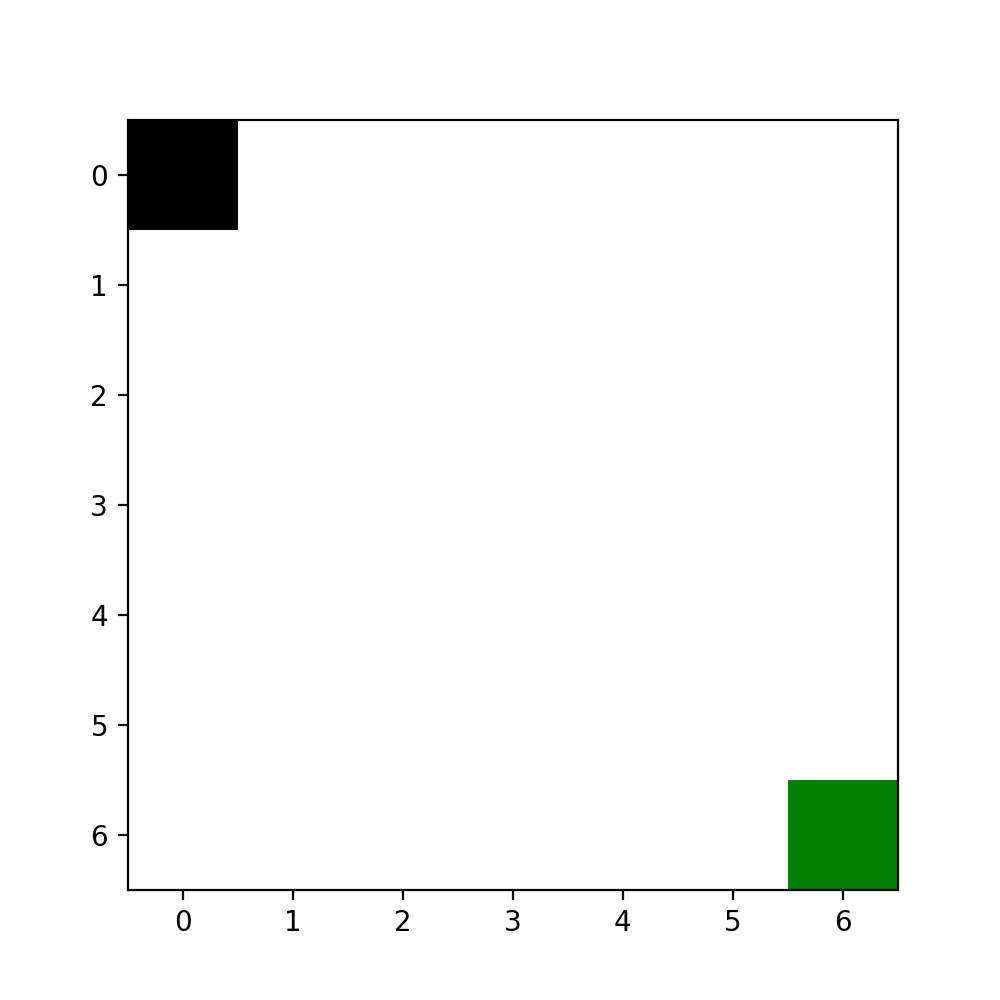
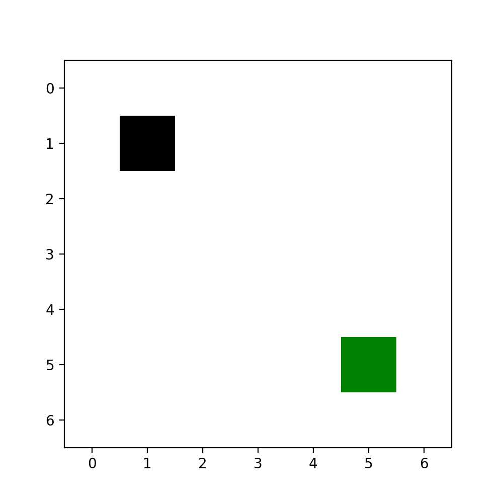

Creating a Custom Domain and Heuristic Function¶
We will create a simple grid domain where the agent can move up, down, left, or right along a two-dimensional grid to reach a goal square. We will create neural network inputs for a neural network that DeepXube provides as well as a neural network input for our own custom neural network.
In the directory in which you run deepxube, copy the code below to the domains/grid_tutorial.py file.
DeepXube automatically looks in the domains/ folder to see what is registered. This file will be explained part-by-part.
from typing import List, Tuple, Optional, Type
import numpy as np
from torch import nn, Tensor
from deepxube.base.factory import DelimParser
from deepxube.base.domain import State, Action, Goal, ActsEnumFixed, StartGoalWalkable, StateGoalVizable, StringToAct
from deepxube.base.nnet_input import StateGoalIn, StateGoalActFixIn, StateGoalActIn, FlatIn
from deepxube.base.heuristic import HeurNNet
from deepxube.factories.heuristic_factory import heuristic_factory
from deepxube.factories.domain_factory import domain_factory
from deepxube.factories.nnet_input_factory import register_nnet_input
from deepxube.nnet.pytorch_models import Conv2dModel, FullyConnectedModel
from numpy.typing import NDArray
import random
from matplotlib.figure import Figure
from matplotlib.colors import ListedColormap
from matplotlib.axes import Axes
# start sag
class GridState(State):
def __init__(self, robot_x: int, robot_y: int):
self.robot_x: int = robot_x
self.robot_y: int = robot_y
def __hash__(self) -> int:
return hash(self.robot_x + self.robot_y)
def __eq__(self, other: object) -> bool:
if isinstance(other, GridState):
return (self.robot_x == other.robot_x) and (self.robot_y == other.robot_y)
return NotImplemented
class GridGoal(Goal):
def __init__(self, robot_x: int, robot_y: int):
self.robot_x: int = robot_x
self.robot_y: int = robot_y
class GridAction(Action):
def __init__(self, action: int):
self.action = action
def __hash__(self) -> int:
return self.action
def __eq__(self, other: object) -> bool:
if isinstance(other, GridAction):
return self.action == other.action
return NotImplemented
def __repr__(self) -> str:
return ["UP", "DOWN", "LEFT", "RIGHT"][self.action]
# end sag
# start def
@domain_factory.register_class("grid_tut")
class Grid(ActsEnumFixed[GridState, GridAction, GridGoal], StartGoalWalkable[GridState, GridAction, GridGoal],
StateGoalVizable[GridState, GridAction, GridGoal], StringToAct[GridState, GridAction, GridGoal]):
def __init__(self, dim: int = 7):
super().__init__()
self.dim: int = dim
self.actions_fixed: List[GridAction] = [GridAction(x) for x in [0, 1, 2, 3]]
# end init
# start domain methods
def is_solved(self, states: List[GridState], goals: List[GridGoal]) -> List[bool]:
return [(state.robot_x == goal.robot_x) and (state.robot_y == goal.robot_y) for state, goal in zip(states, goals)]
def next_state(self, states: List[GridState], actions: List[GridAction]) -> Tuple[List[GridState], List[float]]:
states_next: List[GridState] = []
for state, action in zip(states, actions):
if action.action == 1: # up
states_next.append(GridState(min(state.robot_x + 1, self.dim - 1), state.robot_y))
elif action.action == 0: # down
states_next.append(GridState(max(state.robot_x - 1, 0), state.robot_y))
elif action.action == 3: # left
states_next.append(GridState(state.robot_x, min(state.robot_y + 1, self.dim - 1)))
elif action.action == 2: # right
states_next.append(GridState(state.robot_x, max(state.robot_y - 1, 0)))
return states_next, [1.0] * len(states_next)
# end domain methods
# start actsenumfixed methods
def get_actions_fixed(self) -> List[GridAction]:
return self.actions_fixed.copy()
# end actsenumfixed methods
# start startgoalwalkable methods
def sample_start_states(self, num_states: int) -> List[GridState]:
return [GridState(random.randint(0, self.dim - 1), random.randint(0, self.dim - 1)) for _ in range(num_states)]
def sample_goal_from_state(self, states_start: Optional[List[GridState]], states_goal: List[GridState]) -> List[GridGoal]:
return [GridGoal(state_goal.robot_x, state_goal.robot_y) for state_goal in states_goal]
# end startgoalwalkable methods
# start viz methods
def visualize_state_goal(self, state: GridState, goal: GridGoal, fig: Figure) -> None:
ax: Axes = fig.subplots(1, 1)
grid: NDArray = np.zeros((self.dim, self.dim))
grid[goal.robot_x, goal.robot_y] = 2
grid[state.robot_x, state.robot_y] = 1
ax.imshow(grid, cmap=ListedColormap(["white", "black", "green"]), origin="upper")
def string_to_action(self, act_str: str) -> Optional[GridAction]:
if act_str in {"w", "s", "a", "d"}:
return GridAction(["w", "s", "a", "d"].index(act_str))
else:
return None
def string_to_action_help(self) -> str:
return "w, s, a, or d for up, down, left, and right, respectively."
# end viz methods
# start repr methods
def __repr__(self) -> str:
return f"Grid(dim={self.dim})"
# end repr methods
# start domain parser
@domain_factory.register_parser("grid_tut")
class GridParser(DelimParser):
def __init__(self) -> None:
super().__init__()
self.add_argument("d", "dim", int, "dimensionality of grid")
@property
def delim(self) -> str:
return "_"
# end domain parser
# start gridflatin definition
@register_nnet_input("grid_tut", "grid_flat_in")
class GridFlatIn(StateGoalIn[Grid, GridState, GridGoal], FlatIn[Grid]):
def get_input_info(self) -> Tuple[List[int], List[int]]:
return [4], [self.domain.dim]
def to_np(self, states: List[GridState], goals: List[GridGoal]) -> List[NDArray]:
return [np.stack([np.stack([state.robot_x for state in states]), np.stack([state.robot_y for state in states]),
np.stack([goal.robot_x for goal in goals]), np.stack([goal.robot_y for goal in goals])], axis=1)]
# end gridflatin definition
# start gridflatinqfix definition
@register_nnet_input("grid_tut", "grid_flat_in_qfix")
class GridFlatInQFix(StateGoalActFixIn[Grid, GridState, GridGoal, GridAction], FlatIn[Grid]):
def get_input_info(self) -> Tuple[List[int], List[int]]:
return [4], [self.domain.dim]
def to_np(self, states: List[GridState], goals: List[GridGoal], actions_l: List[List[GridAction]]) -> List[NDArray]:
actions_np: NDArray = np.array([[action_i.action for action_i in actions] for actions in actions_l])
return [np.stack([np.stack([state.robot_x for state in states]), np.stack([state.robot_y for state in states]),
np.stack([goal.robot_x for goal in goals]), np.stack([goal.robot_y for goal in goals])], axis=1)] + [actions_np]
# end gridflatinqfix definition
# start gridflatinactin definition
@register_nnet_input("grid_tut", "grid_flat_in_actin")
class GridFlatInActIn(StateGoalActIn[Grid, GridState, GridGoal, GridAction], FlatIn[Grid]):
def get_input_info(self) -> Tuple[List[int], List[int]]:
return [4, 1], [self.domain.dim, self.domain.get_num_acts()]
def to_np(self, states: List[GridState], goals: List[GridGoal], actions: List[GridAction]) -> List[NDArray]:
actions_np: NDArray = np.expand_dims(np.array([action_i.action for action_i in actions]), 1)
return [np.stack([np.stack([state.robot_x for state in states]), np.stack([state.robot_y for state in states]),
np.stack([goal.robot_x for goal in goals]), np.stack([goal.robot_y for goal in goals])], axis=1)] + [actions_np]
# end gridflatinactin definition
# start grid nnet input definition
@register_nnet_input("grid_tut", "grid_nnet_input")
class GridNNetInput(StateGoalIn[Grid, GridState, GridGoal]):
def get_input_info(self) -> int:
return self.domain.dim
def to_np(self, states: List[GridState], goals: List[GridGoal]) -> List[NDArray]:
np_rep: NDArray = np.zeros((len(states), 2, self.domain.dim, self.domain.dim))
for idx, (state, goal) in enumerate(zip(states, goals)):
np_rep[idx, 0, state.robot_x, state.robot_y] = 1
np_rep[idx, 1, goal.robot_x, goal.robot_y] = 1
return [np_rep]
# end grid nnet input definition
# start grid nnet definition
@heuristic_factory.register_class("gridnet_tut")
class GridNet(HeurNNet[GridNNetInput]):
@staticmethod
def nnet_input_type() -> Type[GridNNetInput]:
return GridNNetInput
def __init__(self, nnet_input: GridNNetInput, out_dim: int, q_fix: bool, chan_size: int = 8, fc_size: int = 100):
super().__init__(nnet_input, out_dim, q_fix)
grid_dim: int = self.nnet_input.get_input_info()
self.heur: nn.Module = nn.Sequential(
Conv2dModel(2, [chan_size, chan_size], [3, 3], [1, 1], ["RELU", "RELU"], batch_norms=[True, True]),
nn.Flatten(),
FullyConnectedModel(grid_dim * grid_dim * chan_size, [fc_size], ["RELU"], batch_norms=[True]),
nn.Linear(fc_size, self.out_dim)
)
def _forward(self, inputs: List[Tensor]) -> Tensor:
x: Tensor = self.heur(inputs[0])
return x
# end grid nnet definition
# start grid nnet parser definition
@heuristic_factory.register_parser("gridnet_tut")
class GridNetParser(DelimParser):
def __init__(self) -> None:
super().__init__()
self.add_argument("ch", "chan_size", int, "number of channels")
self.add_argument("fc", "fc_size", int, "size of fully connected layer")
@property
def delim(self) -> str:
return "_"
# end grid nnet parser definition
Tip
Since the domain is registered, we should be able to see “grid_tut” with
deepxube domain_info after it is put in your domains/ folder.
More specific information can be obtained about the domain with
deepxube domain_info --name grid_tut
State, Action, Goal¶
To faciliate using states with Python dictionary objects and re-identifying states during search, all State objects must implement
__hash__ and __eq__. This must also be done for Action objects.
class GridState(State):
def __init__(self, robot_x: int, robot_y: int):
self.robot_x: int = robot_x
self.robot_y: int = robot_y
def __hash__(self) -> int:
return hash(self.robot_x + self.robot_y)
def __eq__(self, other: object) -> bool:
if isinstance(other, GridState):
return (self.robot_x == other.robot_x) and (self.robot_y == other.robot_y)
return NotImplemented
class GridGoal(Goal):
def __init__(self, robot_x: int, robot_y: int):
self.robot_x: int = robot_x
self.robot_y: int = robot_y
class GridAction(Action):
def __init__(self, action: int):
self.action = action
def __hash__(self) -> int:
return self.action
def __eq__(self, other: object) -> bool:
if isinstance(other, GridAction):
return self.action == other.action
return NotImplemented
def __repr__(self) -> str:
return ["UP", "DOWN", "LEFT", "RIGHT"][self.action]
# end sag
# start def
@domain_factory.register_class("grid_tut")
class Grid(ActsEnumFixed[GridState, GridAction, GridGoal], StartGoalWalkable[GridState, GridAction, GridGoal],
StateGoalVizable[GridState, GridAction, GridGoal], StringToAct[GridState, GridAction, GridGoal]):
def __init__(self, dim: int = 7):
super().__init__()
self.dim: int = dim
self.actions_fixed: List[GridAction] = [GridAction(x) for x in [0, 1, 2, 3]]
Tip
Implementing __repr__ for Action objects can be convenient since actions are printed to the screen when interacting with problem
instances with deepxube viz.
Domain¶
Registration, Mixins, and Initialization¶
We will register the domain with the name grid_tut. This tells DeepXube that this name
refers to the domain being defined.
We will use the deepxube.base.domain.ActsEnumFixed mixin since the action space is fixed (up, down, left, right) and enumerable. We will use the
deepxube.base.domain.StartGoalWalkable to generate problem instances by sampling a start state, taking a random walk,
and using the terminal state to sample a goal.We will also use the deepxube.base.domain.StateGoalVizable
and deepxube.base.domain.StringToAct to interact with the domain using deepxube viz.
The domain will be given an argument for its dimensionality.
@domain_factory.register_class("grid_tut")
class Grid(ActsEnumFixed[GridState, GridAction, GridGoal], StartGoalWalkable[GridState, GridAction, GridGoal],
StateGoalVizable[GridState, GridAction, GridGoal], StringToAct[GridState, GridAction, GridGoal]):
def __init__(self, dim: int = 7):
super().__init__()
self.dim: int = dim
self.actions_fixed: List[GridAction] = [GridAction(x) for x in [0, 1, 2, 3]]
Important
A default value should be set for all Domain arguments in case they are not set via the command line.
Domain methods¶
The abstract methods from deepxube.base.domain.Domain not implemented by
mixins are deepxube.base.domain.Domain.is_solved() and
deepxube.base.domain.Domain.next_state(). is_solved checks if the x and y
location of the agent is at the goal x and y location and next_state moves the agent
in the corresponding direction with a transition cost of 1 for all actions.
def is_solved(self, states: List[GridState], goals: List[GridGoal]) -> List[bool]:
return [(state.robot_x == goal.robot_x) and (state.robot_y == goal.robot_y) for state, goal in zip(states, goals)]
def next_state(self, states: List[GridState], actions: List[GridAction]) -> Tuple[List[GridState], List[float]]:
states_next: List[GridState] = []
for state, action in zip(states, actions):
if action.action == 1: # up
states_next.append(GridState(min(state.robot_x + 1, self.dim - 1), state.robot_y))
elif action.action == 0: # down
states_next.append(GridState(max(state.robot_x - 1, 0), state.robot_y))
elif action.action == 3: # left
states_next.append(GridState(state.robot_x, min(state.robot_y + 1, self.dim - 1)))
elif action.action == 2: # right
states_next.append(GridState(state.robot_x, max(state.robot_y - 1, 0)))
return states_next, [1.0] * len(states_next)
ActsEnumFixed methods¶
deepxube.base.domain.ActsEnumFixed automatically implements
deepxube.base.domain.Domain.sample_state_action() based on the abstract method
deepxube.base.domain.ActsEnumFixed.get_actions_fixed(). This is implemented by
simply returning a copy of the list created in the __init__ method containing all actions.
def get_actions_fixed(self) -> List[GridAction]:
return self.actions_fixed.copy()
StartGoalWalkable methods¶
deepxube.base.domain.StartGoalWalkable automatically implements
deepxube.base.domain.Domain.sample_problem_instances() based on the abstract methods
deepxube.base.domain.StartGoalWalkable.sample_start_states() and
deepxube.base.domain.GoalSampleableFromState.sample_goal_from_state().
sample_start_states is implemented by placing the agent at a random x, y location.
sample_goal_from_state is implemented by using the x, y of the agent’s location as the
desired goal.
def sample_start_states(self, num_states: int) -> List[GridState]:
return [GridState(random.randint(0, self.dim - 1), random.randint(0, self.dim - 1)) for _ in range(num_states)]
def sample_goal_from_state(self, states_start: Optional[List[GridState]], states_goal: List[GridState]) -> List[GridGoal]:
return [GridGoal(state_goal.robot_x, state_goal.robot_y) for state_goal in states_goal]
Visualization and Interaction Methods¶
deepxube.base.domain.StateGoalVizable and deepxube.base.domain.StringToAct allow for the visualization of problem
instances and interaction with them using the terminal. A simple grid is created with black and green to indicate the locations of
the agent and goal, respectively.
def visualize_state_goal(self, state: GridState, goal: GridGoal, fig: Figure) -> None:
ax: Axes = fig.subplots(1, 1)
grid: NDArray = np.zeros((self.dim, self.dim))
grid[goal.robot_x, goal.robot_y] = 2
grid[state.robot_x, state.robot_y] = 1
ax.imshow(grid, cmap=ListedColormap(["white", "black", "green"]), origin="upper")
def string_to_action(self, act_str: str) -> Optional[GridAction]:
if act_str in {"w", "s", "a", "d"}:
return GridAction(["w", "s", "a", "d"].index(act_str))
else:
return None
def string_to_action_help(self) -> str:
return "w, s, a, or d for up, down, left, and right, respectively."
Representation Method¶
def __repr__(self) -> str:
return f"Grid(dim={self.dim})"
Tip
Implementing __repr__ for Domain objects can be convenient since the domain is printed to the screen and output.txt file during
training and solving. Having an identifiable name for the domain along with a clear representation of its parameters can be helpful
when looking back on different runs.
Domain Parser¶
To allow the user to set parameters of the domain via the command line, one can implement a deepxube.base.factory.Parser
class and register it with the same name as the domain. The deepxube.base.factory.DelimParser is a subclass that makes it
easy to define parsing and help messages.
@domain_factory.register_parser("grid_tut")
class GridParser(DelimParser):
def __init__(self) -> None:
super().__init__()
self.add_argument("d", "dim", int, "dimensionality of grid")
@property
def delim(self) -> str:
return "_"
Now, grid domains of different dimensions can be created using the command-line:
deepxube viz --domain grid_tut.7d --steps 100
deepxube viz --domain grid_tut.20d --steps 100
Neural Network Inputs¶
Flat Input¶
This input gives the x, y coordinates of the agent and goal locations to a one-dimensional representation. It is then converted to a one-hot representation on the GPU with depth equal to the dimensionality of the domain.
@register_nnet_input("grid_tut", "grid_flat_in")
class GridFlatIn(StateGoalIn[Grid, GridState, GridGoal], FlatIn[Grid]):
def get_input_info(self) -> Tuple[List[int], List[int]]:
return [4], [self.domain.dim]
def to_np(self, states: List[GridState], goals: List[GridGoal]) -> List[NDArray]:
return [np.stack([np.stack([state.robot_x for state in states]), np.stack([state.robot_y for state in states]),
np.stack([goal.robot_x for goal in goals]), np.stack([goal.robot_y for goal in goals])], axis=1)]
Tip
The domain is passed to the neural network input and is accessible
via self.domain.
Tip
Converting data to a one-hot representation on the GPU instead of the CPU can speed up CPU to GPU transfer.
Important
Each element in the list of numpy arrays that the to_np method returns
must have its first dimension be equal to the number of inputs.
We can now train a heuristic function that takes a flat input for the grid domain. It should learn to solve over 95% of problem instances with 20 iterations of A* search during training.
deepxube train --domain grid_tut.7d --heur resnet_fc.100H_1B_bn --heur_type V --pathfind graph_v --step_max 100 --up_itrs 100 --search_itrs 20 --backup -1 --procs 2 --batch_size 200 --max_itrs 1000 --dir tutorial/grid_tut/flatin_v/
device: cpu, devices: [], on_gpu: False
ResnetFCHeur(
(one_hots): ModuleList(
(0): OneHot()
)
(heur): Sequential(
(0): Linear(in_features=28, out_features=100, bias=True)
(1): ResnetModel(
(blocks): ModuleList(
(0): ModuleList(
(0): FullyConnectedModel(
(layers): ModuleList(
(0): ModuleList(
(0): Linear(in_features=100, out_features=100, bias=True)
(1): BatchNorm1d(100, eps=1e-05, momentum=0.1, affine=True, track_running_stats=True)
(2): ReLU()
)
(1): ModuleList(
(0): Linear(in_features=100, out_features=100, bias=True)
(1): BatchNorm1d(100, eps=1e-05, momentum=0.1, affine=True, track_running_stats=True)
(2): LinearAct()
)
)
)
)
)
(act_fns): ModuleList(
(0): ReLU()
)
)
(2): Linear(in_features=100, out_features=1, bias=True)
)
)
Number of trainable parameters: 23,601
Initializing data buffer with max size 20,000
Input array sizes:
index: 0, dtype: int64, shape: (4,)
index: 1, dtype: float64, shape: ()
Data buffer initialized. Time: 0.00016999244689941406
UpdateHeurVRLKeepGoal(UpArgs(procs=2, up_itrs=100, step_max=100, search_itrs=20, ub_heur_solns=False, backup=-1, policy_rand_prob=0.0, up_gen_itrs=None, up_batch_size=100, nnet_batch_size=20000, sync_main=False, v=False))
GraphSearchHeurNodeActsEnum(batch_size=1, weight=1.0, eps=0.0)
TrainArgs(batch_size=200, max_itrs=1000, balance_steps=False, rb=0, loss_thresh=inf, targ_up_searches=0, skip_heur=False, skip_policy=False, checkpoint=0, grad_accum=1, display=100)
Grid(dim=7)
Getting Data - itr: 0, update_num: 0, targ_update: 0, num_gen: 20,000
Times - steps_gen: 0.03, inst_info: 0.00, inst_add: 0.00, backup: 0.02, get_tr_data: 0.00, to_np: 0.02, update_perf: 0.00, put: 0.01, gc: 0.29, ->get_states: 0.10, ->pathfinding: 1.34, Tot: 1.81
(get_states): sample_start_states: 0.00, random_walk: 0.10, sample_goal: 0.00, Tot: 0.10
(pathfinding): root: 0.00, pop: 0.00, is_solved: 0.00, goal: 0.00, expand: 0.04, nodes: 0.07, up_inst: 0.09, heur: 1.07, filt: 0.03, cost: 0.01, pushpop: 0.02, edges_next: 0.01, set_next: 0.00, Tot: 1.34
Data - %solved: 56.73, path_costs: 2.130, search_itrs: 8.821, cost-to-go (mean/min/max): 0.98/0.00/2.00
Itr: 0, loss: 2.16E+00, targ_ctg: 1.03, nnet_ctg: -0.38, Time: 1.24
Train - itrs: 100, loss: 3.83E-02, targ_updated: True
Times - up_start: 0.01, up_data: 1.05, up_end: 0.18, data_samp: 0.00, train: 0.10, save_net: 0.00, save_status: 0.00, Tot: 1.33
Getting Data - itr: 100, update_num: 1, targ_update: 1, num_gen: 20,000
Times - steps_gen: 0.00, inst_info: 0.00, inst_add: 0.00, backup: 0.02, get_tr_data: 0.00, to_np: 0.02, update_perf: 0.00, put: 0.01, gc: 0.29, ->get_states: 0.10, ->pathfinding: 1.58, Tot: 2.02
(get_states): sample_start_states: 0.00, random_walk: 0.09, sample_goal: 0.00, Tot: 0.10
(pathfinding): root: 0.00, pop: 0.00, is_solved: 0.00, goal: 0.00, expand: 0.04, nodes: 0.07, up_inst: 0.04, heur: 1.36, filt: 0.03, cost: 0.01, pushpop: 0.02, edges_next: 0.01, set_next: 0.00, Tot: 1.58
Data - %solved: 63.60, path_costs: 2.285, search_itrs: 7.843, cost-to-go (mean/min/max): 1.78/0.00/3.17
Itr: 100, loss: 8.73E-01, targ_ctg: 1.82, nnet_ctg: 0.98, Time: 1.18
Train - itrs: 100, loss: 5.70E-02, targ_updated: True
Times - up_start: 0.00, up_data: 0.99, up_end: 0.18, data_samp: 0.00, train: 0.09, save_net: 0.00, save_status: 0.00, Tot: 1.27
Getting Data - itr: 200, update_num: 2, targ_update: 2, num_gen: 20,000
Times - steps_gen: 0.00, inst_info: 0.00, inst_add: 0.00, backup: 0.02, get_tr_data: 0.00, to_np: 0.02, update_perf: 0.00, put: 0.01, gc: 0.32, ->get_states: 0.12, ->pathfinding: 1.62, Tot: 2.12
(get_states): sample_start_states: 0.00, random_walk: 0.12, sample_goal: 0.00, Tot: 0.12
(pathfinding): root: 0.00, pop: 0.00, is_solved: 0.00, goal: 0.00, expand: 0.05, nodes: 0.07, up_inst: 0.04, heur: 1.39, filt: 0.03, cost: 0.01, pushpop: 0.02, edges_next: 0.01, set_next: 0.00, Tot: 1.62
Data - %solved: 76.21, path_costs: 2.748, search_itrs: 7.174, cost-to-go (mean/min/max): 2.40/0.00/4.21
Itr: 200, loss: 5.76E-01, targ_ctg: 2.34, nnet_ctg: 1.74, Time: 1.25
Train - itrs: 100, loss: 6.96E-02, targ_updated: True
Times - up_start: 0.00, up_data: 1.04, up_end: 0.21, data_samp: 0.00, train: 0.09, save_net: 0.00, save_status: 0.00, Tot: 1.34
Getting Data - itr: 300, update_num: 3, targ_update: 3, num_gen: 20,000
Times - steps_gen: 0.00, inst_info: 0.00, inst_add: 0.00, backup: 0.02, get_tr_data: 0.00, to_np: 0.03, update_perf: 0.00, put: 0.01, gc: 0.30, ->get_states: 0.15, ->pathfinding: 1.78, Tot: 2.28
(get_states): sample_start_states: 0.00, random_walk: 0.14, sample_goal: 0.00, Tot: 0.15
(pathfinding): root: 0.00, pop: 0.00, is_solved: 0.00, goal: 0.00, expand: 0.04, nodes: 0.07, up_inst: 0.04, heur: 1.55, filt: 0.03, cost: 0.01, pushpop: 0.02, edges_next: 0.01, set_next: 0.00, Tot: 1.78
Data - %solved: 89.44, path_costs: 2.945, search_itrs: 5.904, cost-to-go (mean/min/max): 2.75/0.00/5.18
Itr: 300, loss: 3.82E-01, targ_ctg: 2.85, nnet_ctg: 2.43, Time: 1.29
Train - itrs: 100, loss: 6.73E-02, targ_updated: True
Times - up_start: 0.00, up_data: 1.12, up_end: 0.17, data_samp: 0.00, train: 0.09, save_net: 0.00, save_status: 0.00, Tot: 1.38
Getting Data - itr: 400, update_num: 4, targ_update: 4, num_gen: 20,000
Times - steps_gen: 0.00, inst_info: 0.00, inst_add: 0.00, backup: 0.02, get_tr_data: 0.00, to_np: 0.02, update_perf: 0.00, put: 0.01, gc: 0.30, ->get_states: 0.16, ->pathfinding: 1.63, Tot: 2.14
(get_states): sample_start_states: 0.00, random_walk: 0.15, sample_goal: 0.00, Tot: 0.16
(pathfinding): root: 0.00, pop: 0.00, is_solved: 0.00, goal: 0.00, expand: 0.05, nodes: 0.07, up_inst: 0.04, heur: 1.40, filt: 0.03, cost: 0.01, pushpop: 0.02, edges_next: 0.01, set_next: 0.00, Tot: 1.63
Data - %solved: 94.26, path_costs: 3.201, search_itrs: 5.631, cost-to-go (mean/min/max): 2.96/0.00/6.12
Itr: 400, loss: 2.04E-01, targ_ctg: 2.87, nnet_ctg: 2.70, Time: 1.22
Train - itrs: 100, loss: 8.11E-02, targ_updated: True
Times - up_start: 0.00, up_data: 1.05, up_end: 0.17, data_samp: 0.00, train: 0.09, save_net: 0.00, save_status: 0.00, Tot: 1.31
Getting Data - itr: 500, update_num: 5, targ_update: 5, num_gen: 20,000
Times - steps_gen: 0.00, inst_info: 0.00, inst_add: 0.00, backup: 0.02, get_tr_data: 0.00, to_np: 0.02, update_perf: 0.00, put: 0.01, gc: 0.31, ->get_states: 0.17, ->pathfinding: 1.62, Tot: 2.16
(get_states): sample_start_states: 0.00, random_walk: 0.17, sample_goal: 0.00, Tot: 0.17
(pathfinding): root: 0.00, pop: 0.00, is_solved: 0.00, goal: 0.00, expand: 0.05, nodes: 0.07, up_inst: 0.04, heur: 1.39, filt: 0.03, cost: 0.01, pushpop: 0.02, edges_next: 0.01, set_next: 0.00, Tot: 1.62
Data - %solved: 96.72, path_costs: 3.351, search_itrs: 5.467, cost-to-go (mean/min/max): 2.90/0.00/6.93
Itr: 500, loss: 1.48E-01, targ_ctg: 2.72, nnet_ctg: 2.83, Time: 1.23
Train - itrs: 100, loss: 5.69E-02, targ_updated: True
Times - up_start: 0.00, up_data: 1.06, up_end: 0.17, data_samp: 0.00, train: 0.09, save_net: 0.00, save_status: 0.00, Tot: 1.32
Getting Data - itr: 600, update_num: 6, targ_update: 6, num_gen: 20,000
Times - steps_gen: 0.00, inst_info: 0.00, inst_add: 0.00, backup: 0.02, get_tr_data: 0.00, to_np: 0.02, update_perf: 0.00, put: 0.01, gc: 0.30, ->get_states: 0.18, ->pathfinding: 1.64, Tot: 2.16
(get_states): sample_start_states: 0.00, random_walk: 0.17, sample_goal: 0.00, Tot: 0.18
(pathfinding): root: 0.00, pop: 0.00, is_solved: 0.00, goal: 0.00, expand: 0.05, nodes: 0.07, up_inst: 0.04, heur: 1.40, filt: 0.03, cost: 0.01, pushpop: 0.02, edges_next: 0.01, set_next: 0.00, Tot: 1.64
Data - %solved: 98.14, path_costs: 3.331, search_itrs: 5.297, cost-to-go (mean/min/max): 2.74/0.00/8.12
Itr: 600, loss: 1.82E-01, targ_ctg: 2.54, nnet_ctg: 2.85, Time: 1.24
Train - itrs: 100, loss: 4.36E-02, targ_updated: True
Times - up_start: 0.00, up_data: 1.07, up_end: 0.17, data_samp: 0.00, train: 0.09, save_net: 0.00, save_status: 0.00, Tot: 1.33
Getting Data - itr: 700, update_num: 7, targ_update: 7, num_gen: 20,000
Times - steps_gen: 0.00, inst_info: 0.00, inst_add: 0.00, backup: 0.02, get_tr_data: 0.00, to_np: 0.02, update_perf: 0.00, put: 0.01, gc: 0.31, ->get_states: 0.18, ->pathfinding: 1.66, Tot: 2.20
(get_states): sample_start_states: 0.00, random_walk: 0.17, sample_goal: 0.00, Tot: 0.18
(pathfinding): root: 0.00, pop: 0.00, is_solved: 0.00, goal: 0.00, expand: 0.05, nodes: 0.07, up_inst: 0.04, heur: 1.43, filt: 0.03, cost: 0.01, pushpop: 0.02, edges_next: 0.01, set_next: 0.00, Tot: 1.66
Data - %solved: 98.21, path_costs: 3.428, search_itrs: 5.431, cost-to-go (mean/min/max): 2.78/0.00/9.15
Itr: 700, loss: 7.89E-02, targ_ctg: 2.78, nnet_ctg: 2.79, Time: 1.25
Train - itrs: 100, loss: 7.82E-02, targ_updated: True
Times - up_start: 0.00, up_data: 1.08, up_end: 0.16, data_samp: 0.00, train: 0.09, save_net: 0.00, save_status: 0.00, Tot: 1.35
Getting Data - itr: 800, update_num: 8, targ_update: 8, num_gen: 20,000
Times - steps_gen: 0.00, inst_info: 0.00, inst_add: 0.00, backup: 0.02, get_tr_data: 0.00, to_np: 0.02, update_perf: 0.00, put: 0.01, gc: 0.31, ->get_states: 0.18, ->pathfinding: 1.66, Tot: 2.20
(get_states): sample_start_states: 0.00, random_walk: 0.18, sample_goal: 0.00, Tot: 0.18
(pathfinding): root: 0.00, pop: 0.00, is_solved: 0.00, goal: 0.00, expand: 0.05, nodes: 0.07, up_inst: 0.04, heur: 1.42, filt: 0.03, cost: 0.01, pushpop: 0.02, edges_next: 0.01, set_next: 0.00, Tot: 1.66
Data - %solved: 98.93, path_costs: 3.470, search_itrs: 5.161, cost-to-go (mean/min/max): 2.73/0.00/10.21
Itr: 800, loss: 5.96E-02, targ_ctg: 2.89, nnet_ctg: 2.90, Time: 1.26
Train - itrs: 100, loss: 2.67E-02, targ_updated: True
Times - up_start: 0.00, up_data: 1.09, up_end: 0.17, data_samp: 0.00, train: 0.09, save_net: 0.00, save_status: 0.00, Tot: 1.36
Getting Data - itr: 900, update_num: 9, targ_update: 9, num_gen: 20,000
Times - steps_gen: 0.00, inst_info: 0.00, inst_add: 0.00, backup: 0.02, get_tr_data: 0.00, to_np: 0.03, update_perf: 0.00, put: 0.01, gc: 0.33, ->get_states: 0.18, ->pathfinding: 1.77, Tot: 2.34
(get_states): sample_start_states: 0.00, random_walk: 0.18, sample_goal: 0.00, Tot: 0.18
(pathfinding): root: 0.00, pop: 0.00, is_solved: 0.00, goal: 0.00, expand: 0.06, nodes: 0.07, up_inst: 0.04, heur: 1.52, filt: 0.03, cost: 0.01, pushpop: 0.02, edges_next: 0.01, set_next: 0.00, Tot: 1.77
Data - %solved: 98.75, path_costs: 3.500, search_itrs: 5.425, cost-to-go (mean/min/max): 2.70/0.00/11.19
Itr: 900, loss: 1.03E-01, targ_ctg: 2.63, nnet_ctg: 2.78, Time: 1.33
Train - itrs: 100, loss: 1.16E-01, targ_updated: True
Times - up_start: 0.00, up_data: 1.15, up_end: 0.17, data_samp: 0.00, train: 0.09, save_net: 0.00, save_status: 0.00, Tot: 1.42
Done
Flat Input for a Q-Network with a Fixed Action Output¶
This neural network input assumes a fixed and enumerable action space and outputs a vector that corresponds to the transition cost plus cost-to-go of the resulting state for every possible action [MKS+15].
@register_nnet_input("grid_tut", "grid_flat_in_qfix")
class GridFlatInQFix(StateGoalActFixIn[Grid, GridState, GridGoal, GridAction], FlatIn[Grid]):
def get_input_info(self) -> Tuple[List[int], List[int]]:
return [4], [self.domain.dim]
def to_np(self, states: List[GridState], goals: List[GridGoal], actions_l: List[List[GridAction]]) -> List[NDArray]:
actions_np: NDArray = np.array([[action_i.action for action_i in actions] for actions in actions_l])
return [np.stack([np.stack([state.robot_x for state in states]), np.stack([state.robot_y for state in states]),
np.stack([goal.robot_x for goal in goals]), np.stack([goal.robot_y for goal in goals])], axis=1)] + [actions_np]
Important
It is assumed that every element in actions_l is of the same length.
Important
The last element in the list of numpy arrays returned by to_np must
be the index of the output that corresponds to each action in actions_l.
We can now train a deep Q-network that takes a flat input for the grid domain.
deepxube train --domain grid_tut.7d --heur resnet_fc.100H_1B_bn --heur_type QFix --pathfind graph_q --step_max 100 --up_itrs 100 --search_itrs 20 --backup -1 --procs 2 --batch_size 200 --max_itrs 1000 --dir tutorial/grid_tut/flatin_qfix/
device: cpu, devices: [], on_gpu: False
ResnetFCHeur(
(one_hots): ModuleList(
(0): OneHot()
)
(heur): Sequential(
(0): Linear(in_features=28, out_features=100, bias=True)
(1): ResnetModel(
(blocks): ModuleList(
(0): ModuleList(
(0): FullyConnectedModel(
(layers): ModuleList(
(0): ModuleList(
(0): Linear(in_features=100, out_features=100, bias=True)
(1): BatchNorm1d(100, eps=1e-05, momentum=0.1, affine=True, track_running_stats=True)
(2): ReLU()
)
(1): ModuleList(
(0): Linear(in_features=100, out_features=100, bias=True)
(1): BatchNorm1d(100, eps=1e-05, momentum=0.1, affine=True, track_running_stats=True)
(2): LinearAct()
)
)
)
)
)
(act_fns): ModuleList(
(0): ReLU()
)
)
(2): Linear(in_features=100, out_features=4, bias=True)
)
)
Number of trainable parameters: 23,904
Initializing data buffer with max size 20,000
Input array sizes:
index: 0, dtype: int64, shape: (4,)
index: 1, dtype: int64, shape: (1,)
index: 2, dtype: float64, shape: ()
Data buffer initialized. Time: 0.00015163421630859375
UpdateHeurQRLKeepGoal(UpArgs(procs=2, up_itrs=100, step_max=100, search_itrs=20, ub_heur_solns=False, backup=-1, policy_rand_prob=0.0, up_gen_itrs=None, up_batch_size=100, nnet_batch_size=20000, sync_main=False, v=False))
GraphSearchHeurEdgeActsEnum(batch_size=1, weight=1.0, eps=0.0)
TrainArgs(batch_size=200, max_itrs=1000, balance_steps=False, rb=0, loss_thresh=inf, targ_up_searches=0, skip_heur=False, skip_policy=False, checkpoint=0, grad_accum=1, display=100)
Grid(dim=7)
Getting Data - itr: 0, update_num: 0, targ_update: 0, num_gen: 20,000
Times - steps_gen: 0.02, inst_info: 0.00, inst_add: 0.00, backup: 0.00, get_tr_data: 0.00, to_np: 0.03, update_perf: 0.00, put: 0.01, gc: 0.27, ->get_states: 0.05, ->pathfinding: 1.19, Tot: 1.58
(get_states): sample_start_states: 0.00, random_walk: 0.05, sample_goal: 0.00, Tot: 0.05
(pathfinding): root: 0.00, actions: 0.00, heur: 1.03, pop: 0.00, is_solved: 0.00, goal: 0.00, filt: 0.01, edges: 0.01, cost: 0.07, pushpop: 0.02, next_state: 0.01, nodes: 0.02, up_inst: 0.00, set_next: 0.00, Tot: 1.19
Data - %solved: 31.43, path_costs: 1.490, search_itrs: 12.344, cost-to-go (mean/min/max): 1.18/0.00/2.00
Itr: 0, loss: 1.70E+00, targ_ctg: 1.18, nnet_ctg: 0.04, Time: 1.13
Train - itrs: 100, loss: 1.86E-01, targ_updated: True
Times - up_start: 0.01, up_data: 0.96, up_end: 0.17, data_samp: 0.00, train: 0.09, save_net: 0.00, save_status: 0.00, Tot: 1.22
Getting Data - itr: 100, update_num: 1, targ_update: 1, num_gen: 20,000
Times - steps_gen: 0.00, inst_info: 0.00, inst_add: 0.00, backup: 0.00, get_tr_data: 0.00, to_np: 0.03, update_perf: 0.00, put: 0.01, gc: 0.27, ->get_states: 0.08, ->pathfinding: 1.53, Tot: 1.93
(get_states): sample_start_states: 0.00, random_walk: 0.08, sample_goal: 0.00, Tot: 0.08
(pathfinding): root: 0.00, actions: 0.00, heur: 1.43, pop: 0.00, is_solved: 0.00, goal: 0.00, filt: 0.01, edges: 0.01, cost: 0.02, pushpop: 0.02, next_state: 0.02, nodes: 0.01, up_inst: 0.00, set_next: 0.00, Tot: 1.53
Data - %solved: 35.46, path_costs: 1.512, search_itrs: 7.840, cost-to-go (mean/min/max): 2.14/0.00/3.32
Itr: 100, loss: 1.16E+00, targ_ctg: 2.10, nnet_ctg: 1.12, Time: 1.11
Train - itrs: 100, loss: 1.49E-01, targ_updated: True
Times - up_start: 0.00, up_data: 0.95, up_end: 0.16, data_samp: 0.00, train: 0.09, save_net: 0.00, save_status: 0.00, Tot: 1.20
Getting Data - itr: 200, update_num: 2, targ_update: 2, num_gen: 20,000
Times - steps_gen: 0.00, inst_info: 0.00, inst_add: 0.00, backup: 0.00, get_tr_data: 0.00, to_np: 0.03, update_perf: 0.00, put: 0.01, gc: 0.28, ->get_states: 0.08, ->pathfinding: 1.50, Tot: 1.91
(get_states): sample_start_states: 0.00, random_walk: 0.08, sample_goal: 0.00, Tot: 0.08
(pathfinding): root: 0.00, actions: 0.00, heur: 1.39, pop: 0.00, is_solved: 0.00, goal: 0.00, filt: 0.01, edges: 0.01, cost: 0.02, pushpop: 0.02, next_state: 0.02, nodes: 0.01, up_inst: 0.00, set_next: 0.00, Tot: 1.50
Data - %solved: 42.14, path_costs: 1.663, search_itrs: 6.875, cost-to-go (mean/min/max): 2.98/0.00/4.48
Itr: 200, loss: 1.05E+00, targ_ctg: 2.86, nnet_ctg: 2.05, Time: 1.11
Train - itrs: 100, loss: 2.22E-01, targ_updated: True
Times - up_start: 0.00, up_data: 0.94, up_end: 0.17, data_samp: 0.00, train: 0.09, save_net: 0.00, save_status: 0.00, Tot: 1.20
Getting Data - itr: 300, update_num: 3, targ_update: 3, num_gen: 20,000
Times - steps_gen: 0.00, inst_info: 0.00, inst_add: 0.00, backup: 0.00, get_tr_data: 0.00, to_np: 0.03, update_perf: 0.00, put: 0.01, gc: 0.28, ->get_states: 0.10, ->pathfinding: 1.48, Tot: 1.91
(get_states): sample_start_states: 0.00, random_walk: 0.10, sample_goal: 0.00, Tot: 0.10
(pathfinding): root: 0.00, actions: 0.00, heur: 1.38, pop: 0.00, is_solved: 0.00, goal: 0.00, filt: 0.01, edges: 0.01, cost: 0.02, pushpop: 0.02, next_state: 0.01, nodes: 0.01, up_inst: 0.00, set_next: 0.00, Tot: 1.48
Data - %solved: 56.72, path_costs: 2.047, search_itrs: 6.727, cost-to-go (mean/min/max): 3.67/0.00/5.73
Itr: 300, loss: 1.15E+00, targ_ctg: 3.70, nnet_ctg: 2.90, Time: 1.10
Train - itrs: 100, loss: 2.51E-01, targ_updated: True
Times - up_start: 0.00, up_data: 0.94, up_end: 0.16, data_samp: 0.00, train: 0.09, save_net: 0.00, save_status: 0.00, Tot: 1.19
Getting Data - itr: 400, update_num: 4, targ_update: 4, num_gen: 20,000
Times - steps_gen: 0.00, inst_info: 0.00, inst_add: 0.00, backup: 0.00, get_tr_data: 0.00, to_np: 0.03, update_perf: 0.00, put: 0.01, gc: 0.27, ->get_states: 0.12, ->pathfinding: 1.47, Tot: 1.92
(get_states): sample_start_states: 0.00, random_walk: 0.12, sample_goal: 0.00, Tot: 0.12
(pathfinding): root: 0.00, actions: 0.01, heur: 1.36, pop: 0.00, is_solved: 0.00, goal: 0.00, filt: 0.01, edges: 0.01, cost: 0.02, pushpop: 0.02, next_state: 0.01, nodes: 0.01, up_inst: 0.01, set_next: 0.00, Tot: 1.47
Data - %solved: 74.82, path_costs: 2.428, search_itrs: 5.493, cost-to-go (mean/min/max): 4.06/0.00/6.72
Itr: 400, loss: 9.80E-01, targ_ctg: 4.33, nnet_ctg: 3.62, Time: 1.10
Train - itrs: 100, loss: 1.88E-01, targ_updated: True
Times - up_start: 0.00, up_data: 0.95, up_end: 0.15, data_samp: 0.00, train: 0.09, save_net: 0.00, save_status: 0.00, Tot: 1.19
Getting Data - itr: 500, update_num: 5, targ_update: 5, num_gen: 20,000
Times - steps_gen: 0.00, inst_info: 0.00, inst_add: 0.00, backup: 0.01, get_tr_data: 0.00, to_np: 0.03, update_perf: 0.00, put: 0.01, gc: 0.27, ->get_states: 0.15, ->pathfinding: 1.47, Tot: 1.95
(get_states): sample_start_states: 0.00, random_walk: 0.15, sample_goal: 0.00, Tot: 0.15
(pathfinding): root: 0.00, actions: 0.01, heur: 1.35, pop: 0.00, is_solved: 0.00, goal: 0.00, filt: 0.01, edges: 0.01, cost: 0.02, pushpop: 0.02, next_state: 0.01, nodes: 0.02, up_inst: 0.01, set_next: 0.00, Tot: 1.47
Data - %solved: 89.14, path_costs: 3.001, search_itrs: 5.164, cost-to-go (mean/min/max): 3.89/0.00/8.12
Itr: 500, loss: 3.64E-01, targ_ctg: 3.67, nnet_ctg: 3.77, Time: 1.15
Train - itrs: 100, loss: 1.21E-01, targ_updated: True
Times - up_start: 0.00, up_data: 0.96, up_end: 0.18, data_samp: 0.00, train: 0.10, save_net: 0.00, save_status: 0.00, Tot: 1.25
Getting Data - itr: 600, update_num: 6, targ_update: 6, num_gen: 20,000
Times - steps_gen: 0.00, inst_info: 0.00, inst_add: 0.00, backup: 0.01, get_tr_data: 0.00, to_np: 0.03, update_perf: 0.00, put: 0.01, gc: 0.27, ->get_states: 0.18, ->pathfinding: 1.55, Tot: 2.05
(get_states): sample_start_states: 0.00, random_walk: 0.17, sample_goal: 0.00, Tot: 0.18
(pathfinding): root: 0.00, actions: 0.00, heur: 1.43, pop: 0.00, is_solved: 0.00, goal: 0.00, filt: 0.01, edges: 0.02, cost: 0.02, pushpop: 0.02, next_state: 0.01, nodes: 0.02, up_inst: 0.01, set_next: 0.00, Tot: 1.55
Data - %solved: 95.16, path_costs: 3.270, search_itrs: 4.922, cost-to-go (mean/min/max): 3.69/0.00/9.09
Itr: 600, loss: 3.12E-01, targ_ctg: 3.74, nnet_ctg: 3.70, Time: 1.18
Train - itrs: 100, loss: 2.01E-01, targ_updated: True
Times - up_start: 0.00, up_data: 1.01, up_end: 0.16, data_samp: 0.00, train: 0.09, save_net: 0.00, save_status: 0.00, Tot: 1.27
Getting Data - itr: 700, update_num: 7, targ_update: 7, num_gen: 20,000
Times - steps_gen: 0.00, inst_info: 0.00, inst_add: 0.00, backup: 0.01, get_tr_data: 0.00, to_np: 0.03, update_perf: 0.00, put: 0.01, gc: 0.27, ->get_states: 0.19, ->pathfinding: 1.51, Tot: 2.03
(get_states): sample_start_states: 0.00, random_walk: 0.18, sample_goal: 0.00, Tot: 0.19
(pathfinding): root: 0.00, actions: 0.00, heur: 1.39, pop: 0.00, is_solved: 0.00, goal: 0.00, filt: 0.01, edges: 0.02, cost: 0.02, pushpop: 0.02, next_state: 0.01, nodes: 0.02, up_inst: 0.01, set_next: 0.00, Tot: 1.51
Data - %solved: 98.50, path_costs: 3.485, search_itrs: 4.903, cost-to-go (mean/min/max): 3.22/0.00/10.75
Itr: 700, loss: 2.05E-01, targ_ctg: 3.65, nnet_ctg: 3.62, Time: 1.18
Train - itrs: 100, loss: 1.14E-01, targ_updated: True
Times - up_start: 0.00, up_data: 1.00, up_end: 0.17, data_samp: 0.00, train: 0.09, save_net: 0.00, save_status: 0.00, Tot: 1.28
Getting Data - itr: 800, update_num: 8, targ_update: 8, num_gen: 20,000
Times - steps_gen: 0.00, inst_info: 0.00, inst_add: 0.00, backup: 0.01, get_tr_data: 0.01, to_np: 0.03, update_perf: 0.00, put: 0.01, gc: 0.28, ->get_states: 0.20, ->pathfinding: 1.52, Tot: 2.05
(get_states): sample_start_states: 0.00, random_walk: 0.19, sample_goal: 0.00, Tot: 0.20
(pathfinding): root: 0.00, actions: 0.00, heur: 1.39, pop: 0.00, is_solved: 0.00, goal: 0.00, filt: 0.01, edges: 0.02, cost: 0.02, pushpop: 0.02, next_state: 0.01, nodes: 0.02, up_inst: 0.00, set_next: 0.00, Tot: 1.52
Data - %solved: 98.75, path_costs: 3.551, search_itrs: 4.843, cost-to-go (mean/min/max): 3.03/0.00/11.49
Itr: 800, loss: 9.48E-02, targ_ctg: 3.17, nnet_ctg: 3.15, Time: 1.17
Train - itrs: 100, loss: 1.08E-01, targ_updated: True
Times - up_start: 0.00, up_data: 1.01, up_end: 0.16, data_samp: 0.00, train: 0.09, save_net: 0.00, save_status: 0.00, Tot: 1.27
Getting Data - itr: 900, update_num: 9, targ_update: 9, num_gen: 20,000
Times - steps_gen: 0.00, inst_info: 0.00, inst_add: 0.00, backup: 0.01, get_tr_data: 0.01, to_np: 0.04, update_perf: 0.00, put: 0.02, gc: 0.35, ->get_states: 0.22, ->pathfinding: 1.57, Tot: 2.20
(get_states): sample_start_states: 0.00, random_walk: 0.21, sample_goal: 0.00, Tot: 0.22
(pathfinding): root: 0.00, actions: 0.00, heur: 1.43, pop: 0.00, is_solved: 0.00, goal: 0.00, filt: 0.01, edges: 0.03, cost: 0.02, pushpop: 0.03, next_state: 0.01, nodes: 0.02, up_inst: 0.01, set_next: 0.00, Tot: 1.57
Data - %solved: 99.06, path_costs: 3.673, search_itrs: 4.902, cost-to-go (mean/min/max): 2.89/0.00/11.52
Itr: 900, loss: 7.77E-02, targ_ctg: 2.83, nnet_ctg: 2.98, Time: 1.32
Train - itrs: 100, loss: 1.39E-01, targ_updated: True
Times - up_start: 0.00, up_data: 1.06, up_end: 0.26, data_samp: 0.00, train: 0.10, save_net: 0.00, save_status: 0.00, Tot: 1.43
Done
Tip
We can verify in the output that the final layer of the deep Q-network
matches the number of actions (4)
(2): Linear(in_features=100, out_features=4, bias=True)
Flat Input for a Q-Network with the Action as an Input¶
Ths neural network input assumes the action will be given to the neural network along with the state and goal. This can be useful for domains with dynamic action spaces that have transition functions that are expensive to compute since, when used with Q* search [ASS+24], the number of calls to the transition function is constant with respect to the number of applicable actions.
@register_nnet_input("grid_tut", "grid_flat_in_actin")
class GridFlatInActIn(StateGoalActIn[Grid, GridState, GridGoal, GridAction], FlatIn[Grid]):
def get_input_info(self) -> Tuple[List[int], List[int]]:
return [4, 1], [self.domain.dim, self.domain.get_num_acts()]
def to_np(self, states: List[GridState], goals: List[GridGoal], actions: List[GridAction]) -> List[NDArray]:
actions_np: NDArray = np.expand_dims(np.array([action_i.action for action_i in actions]), 1)
return [np.stack([np.stack([state.robot_x for state in states]), np.stack([state.robot_y for state in states]),
np.stack([goal.robot_x for goal in goals]), np.stack([goal.robot_y for goal in goals])], axis=1)] + [actions_np]
We can now train a deep Q-network that takes the action as in input and a flat input for the grid domain.
deepxube train --domain grid_tut.7d --heur resnet_fc.100H_1B_bn --heur_type QIn --pathfind graph_q --step_max 100 --up_itrs 100 --search_itrs 20 --backup -1 --procs 2 --batch_size 200 --max_itrs 1000 --dir tutorial/grid_tut/flatin_qin/
device: cpu, devices: [], on_gpu: False
ResnetFCHeur(
(one_hots): ModuleList(
(0-1): 2 x OneHot()
)
(heur): Sequential(
(0): Linear(in_features=32, out_features=100, bias=True)
(1): ResnetModel(
(blocks): ModuleList(
(0): ModuleList(
(0): FullyConnectedModel(
(layers): ModuleList(
(0): ModuleList(
(0): Linear(in_features=100, out_features=100, bias=True)
(1): BatchNorm1d(100, eps=1e-05, momentum=0.1, affine=True, track_running_stats=True)
(2): ReLU()
)
(1): ModuleList(
(0): Linear(in_features=100, out_features=100, bias=True)
(1): BatchNorm1d(100, eps=1e-05, momentum=0.1, affine=True, track_running_stats=True)
(2): LinearAct()
)
)
)
)
)
(act_fns): ModuleList(
(0): ReLU()
)
)
(2): Linear(in_features=100, out_features=1, bias=True)
)
)
Number of trainable parameters: 24,001
Initializing data buffer with max size 20,000
Input array sizes:
index: 0, dtype: int64, shape: (4,)
index: 1, dtype: int64, shape: (1,)
index: 2, dtype: float64, shape: ()
Data buffer initialized. Time: 0.00016117095947265625
UpdateHeurQRLKeepGoal(UpArgs(procs=2, up_itrs=100, step_max=100, search_itrs=20, ub_heur_solns=False, backup=-1, policy_rand_prob=0.0, up_gen_itrs=None, up_batch_size=100, nnet_batch_size=20000, sync_main=False, v=False))
GraphSearchHeurEdgeActsEnum(batch_size=1, weight=1.0, eps=0.0)
TrainArgs(batch_size=200, max_itrs=1000, balance_steps=False, rb=0, loss_thresh=inf, targ_up_searches=0, skip_heur=False, skip_policy=False, checkpoint=0, grad_accum=1, display=100)
Grid(dim=7)
Getting Data - itr: 0, update_num: 0, targ_update: 0, num_gen: 20,000
Times - steps_gen: 0.03, inst_info: 0.00, inst_add: 0.00, backup: 0.01, get_tr_data: 0.00, to_np: 0.03, update_perf: 0.00, put: 0.01, gc: 0.30, ->get_states: 0.06, ->pathfinding: 1.35, Tot: 1.78
(get_states): sample_start_states: 0.00, random_walk: 0.06, sample_goal: 0.00, Tot: 0.06
(pathfinding): root: 0.00, actions: 0.00, heur: 1.19, pop: 0.00, is_solved: 0.00, goal: 0.00, filt: 0.01, edges: 0.06, cost: 0.02, pushpop: 0.03, next_state: 0.01, nodes: 0.01, up_inst: 0.00, set_next: 0.00, Tot: 1.35
Data - %solved: 30.85, path_costs: 1.438, search_itrs: 11.551, cost-to-go (mean/min/max): 1.18/0.00/2.00
Itr: 0, loss: 1.39E+00, targ_ctg: 1.20, nnet_ctg: 0.18, Time: 1.28
Train - itrs: 100, loss: 1.85E-01, targ_updated: True
Times - up_start: 0.01, up_data: 1.04, up_end: 0.22, data_samp: 0.00, train: 0.10, save_net: 0.00, save_status: 0.00, Tot: 1.37
Getting Data - itr: 100, update_num: 1, targ_update: 1, num_gen: 20,000
Times - steps_gen: 0.00, inst_info: 0.00, inst_add: 0.00, backup: 0.01, get_tr_data: 0.01, to_np: 0.03, update_perf: 0.00, put: 0.01, gc: 0.29, ->get_states: 0.08, ->pathfinding: 1.58, Tot: 1.99
(get_states): sample_start_states: 0.00, random_walk: 0.08, sample_goal: 0.00, Tot: 0.08
(pathfinding): root: 0.00, actions: 0.00, heur: 1.47, pop: 0.00, is_solved: 0.00, goal: 0.00, filt: 0.01, edges: 0.01, cost: 0.02, pushpop: 0.02, next_state: 0.02, nodes: 0.01, up_inst: 0.00, set_next: 0.00, Tot: 1.58
Data - %solved: 35.00, path_costs: 1.474, search_itrs: 7.304, cost-to-go (mean/min/max): 2.21/0.00/3.37
Itr: 100, loss: 1.41E+00, targ_ctg: 2.27, nnet_ctg: 1.17, Time: 1.16
Train - itrs: 100, loss: 1.95E-01, targ_updated: True
Times - up_start: 0.00, up_data: 0.98, up_end: 0.18, data_samp: 0.00, train: 0.09, save_net: 0.00, save_status: 0.00, Tot: 1.25
Getting Data - itr: 200, update_num: 2, targ_update: 2, num_gen: 20,000
Times - steps_gen: 0.00, inst_info: 0.00, inst_add: 0.00, backup: 0.01, get_tr_data: 0.01, to_np: 0.03, update_perf: 0.00, put: 0.01, gc: 0.28, ->get_states: 0.08, ->pathfinding: 1.57, Tot: 1.98
(get_states): sample_start_states: 0.00, random_walk: 0.08, sample_goal: 0.00, Tot: 0.08
(pathfinding): root: 0.00, actions: 0.00, heur: 1.46, pop: 0.00, is_solved: 0.00, goal: 0.00, filt: 0.01, edges: 0.01, cost: 0.02, pushpop: 0.02, next_state: 0.02, nodes: 0.01, up_inst: 0.00, set_next: 0.00, Tot: 1.57
Data - %solved: 41.78, path_costs: 1.697, search_itrs: 7.491, cost-to-go (mean/min/max): 3.12/0.00/4.51
Itr: 200, loss: 1.18E+00, targ_ctg: 3.06, nnet_ctg: 2.20, Time: 1.14
Train - itrs: 100, loss: 2.99E-01, targ_updated: True
Times - up_start: 0.00, up_data: 0.97, up_end: 0.16, data_samp: 0.00, train: 0.09, save_net: 0.00, save_status: 0.00, Tot: 1.23
Getting Data - itr: 300, update_num: 3, targ_update: 3, num_gen: 20,000
Times - steps_gen: 0.00, inst_info: 0.00, inst_add: 0.00, backup: 0.01, get_tr_data: 0.01, to_np: 0.03, update_perf: 0.00, put: 0.01, gc: 0.31, ->get_states: 0.10, ->pathfinding: 1.64, Tot: 2.10
(get_states): sample_start_states: 0.00, random_walk: 0.10, sample_goal: 0.00, Tot: 0.10
(pathfinding): root: 0.00, actions: 0.00, heur: 1.52, pop: 0.00, is_solved: 0.00, goal: 0.00, filt: 0.01, edges: 0.01, cost: 0.02, pushpop: 0.03, next_state: 0.02, nodes: 0.01, up_inst: 0.01, set_next: 0.00, Tot: 1.64
Data - %solved: 54.56, path_costs: 1.990, search_itrs: 6.358, cost-to-go (mean/min/max): 3.84/0.00/5.98
Itr: 300, loss: 1.23E+00, targ_ctg: 3.97, nnet_ctg: 3.12, Time: 1.21
Train - itrs: 100, loss: 2.65E-01, targ_updated: True
Times - up_start: 0.00, up_data: 1.03, up_end: 0.17, data_samp: 0.00, train: 0.09, save_net: 0.00, save_status: 0.00, Tot: 1.30
Getting Data - itr: 400, update_num: 4, targ_update: 4, num_gen: 20,000
Times - steps_gen: 0.00, inst_info: 0.00, inst_add: 0.00, backup: 0.01, get_tr_data: 0.01, to_np: 0.03, update_perf: 0.00, put: 0.01, gc: 0.29, ->get_states: 0.13, ->pathfinding: 1.61, Tot: 2.09
(get_states): sample_start_states: 0.00, random_walk: 0.13, sample_goal: 0.00, Tot: 0.13
(pathfinding): root: 0.00, actions: 0.01, heur: 1.49, pop: 0.00, is_solved: 0.00, goal: 0.00, filt: 0.01, edges: 0.01, cost: 0.02, pushpop: 0.02, next_state: 0.01, nodes: 0.01, up_inst: 0.01, set_next: 0.00, Tot: 1.61
Data - %solved: 76.86, path_costs: 2.619, search_itrs: 5.711, cost-to-go (mean/min/max): 4.07/0.00/7.12
Itr: 400, loss: 6.90E-01, targ_ctg: 4.06, nnet_ctg: 3.72, Time: 1.19
Train - itrs: 100, loss: 2.17E-01, targ_updated: True
Times - up_start: 0.00, up_data: 1.03, up_end: 0.16, data_samp: 0.00, train: 0.09, save_net: 0.00, save_status: 0.00, Tot: 1.29
Getting Data - itr: 500, update_num: 5, targ_update: 5, num_gen: 20,000
Times - steps_gen: 0.00, inst_info: 0.00, inst_add: 0.00, backup: 0.01, get_tr_data: 0.01, to_np: 0.03, update_perf: 0.00, put: 0.01, gc: 0.27, ->get_states: 0.16, ->pathfinding: 1.60, Tot: 2.08
(get_states): sample_start_states: 0.00, random_walk: 0.16, sample_goal: 0.00, Tot: 0.16
(pathfinding): root: 0.00, actions: 0.01, heur: 1.48, pop: 0.00, is_solved: 0.00, goal: 0.00, filt: 0.01, edges: 0.01, cost: 0.02, pushpop: 0.02, next_state: 0.01, nodes: 0.02, up_inst: 0.01, set_next: 0.00, Tot: 1.60
Data - %solved: 90.52, path_costs: 2.994, search_itrs: 4.911, cost-to-go (mean/min/max): 3.84/0.00/8.13
Itr: 500, loss: 3.71E-01, targ_ctg: 3.48, nnet_ctg: 3.85, Time: 1.19
Train - itrs: 100, loss: 1.12E-01, targ_updated: True
Times - up_start: 0.00, up_data: 1.03, up_end: 0.16, data_samp: 0.00, train: 0.09, save_net: 0.00, save_status: 0.00, Tot: 1.28
Getting Data - itr: 600, update_num: 6, targ_update: 6, num_gen: 20,000
Times - steps_gen: 0.00, inst_info: 0.00, inst_add: 0.00, backup: 0.01, get_tr_data: 0.01, to_np: 0.03, update_perf: 0.00, put: 0.01, gc: 0.28, ->get_states: 0.18, ->pathfinding: 1.59, Tot: 2.10
(get_states): sample_start_states: 0.00, random_walk: 0.17, sample_goal: 0.00, Tot: 0.18
(pathfinding): root: 0.00, actions: 0.00, heur: 1.47, pop: 0.00, is_solved: 0.00, goal: 0.00, filt: 0.01, edges: 0.02, cost: 0.02, pushpop: 0.02, next_state: 0.01, nodes: 0.02, up_inst: 0.01, set_next: 0.00, Tot: 1.59
Data - %solved: 95.68, path_costs: 3.249, search_itrs: 4.896, cost-to-go (mean/min/max): 3.56/0.00/8.96
Itr: 600, loss: 2.20E-01, targ_ctg: 3.48, nnet_ctg: 3.73, Time: 1.20
Train - itrs: 100, loss: 1.57E-01, targ_updated: True
Times - up_start: 0.00, up_data: 1.04, up_end: 0.16, data_samp: 0.00, train: 0.09, save_net: 0.00, save_status: 0.00, Tot: 1.29
Getting Data - itr: 700, update_num: 7, targ_update: 7, num_gen: 20,000
Times - steps_gen: 0.00, inst_info: 0.00, inst_add: 0.00, backup: 0.01, get_tr_data: 0.01, to_np: 0.03, update_perf: 0.00, put: 0.01, gc: 0.29, ->get_states: 0.19, ->pathfinding: 1.69, Tot: 2.22
(get_states): sample_start_states: 0.00, random_walk: 0.19, sample_goal: 0.00, Tot: 0.19
(pathfinding): root: 0.00, actions: 0.00, heur: 1.56, pop: 0.00, is_solved: 0.00, goal: 0.00, filt: 0.01, edges: 0.02, cost: 0.02, pushpop: 0.02, next_state: 0.01, nodes: 0.02, up_inst: 0.01, set_next: 0.00, Tot: 1.69
Data - %solved: 98.11, path_costs: 3.430, search_itrs: 4.794, cost-to-go (mean/min/max): 3.31/0.00/10.11
Itr: 700, loss: 1.46E-01, targ_ctg: 3.37, nnet_ctg: 3.54, Time: 1.30
Train - itrs: 100, loss: 4.09E-01, targ_updated: True
Times - up_start: 0.00, up_data: 1.09, up_end: 0.21, data_samp: 0.00, train: 0.09, save_net: 0.00, save_status: 0.00, Tot: 1.39
Getting Data - itr: 800, update_num: 8, targ_update: 8, num_gen: 20,000
Times - steps_gen: 0.00, inst_info: 0.00, inst_add: 0.00, backup: 0.01, get_tr_data: 0.01, to_np: 0.03, update_perf: 0.00, put: 0.01, gc: 0.32, ->get_states: 0.20, ->pathfinding: 1.73, Tot: 2.32
(get_states): sample_start_states: 0.00, random_walk: 0.20, sample_goal: 0.00, Tot: 0.20
(pathfinding): root: 0.00, actions: 0.00, heur: 1.59, pop: 0.00, is_solved: 0.00, goal: 0.00, filt: 0.01, edges: 0.02, cost: 0.02, pushpop: 0.02, next_state: 0.01, nodes: 0.02, up_inst: 0.01, set_next: 0.00, Tot: 1.73
Data - %solved: 98.63, path_costs: 3.572, search_itrs: 5.010, cost-to-go (mean/min/max): 3.06/0.00/11.32
Itr: 800, loss: 2.19E-01, targ_ctg: 2.96, nnet_ctg: 3.23, Time: 1.32
Train - itrs: 100, loss: 6.38E-02, targ_updated: True
Times - up_start: 0.00, up_data: 1.15, up_end: 0.17, data_samp: 0.00, train: 0.09, save_net: 0.00, save_status: 0.00, Tot: 1.41
Getting Data - itr: 900, update_num: 9, targ_update: 9, num_gen: 20,000
Times - steps_gen: 0.00, inst_info: 0.00, inst_add: 0.00, backup: 0.01, get_tr_data: 0.01, to_np: 0.03, update_perf: 0.00, put: 0.01, gc: 0.33, ->get_states: 0.20, ->pathfinding: 1.74, Tot: 2.32
(get_states): sample_start_states: 0.00, random_walk: 0.19, sample_goal: 0.00, Tot: 0.20
(pathfinding): root: 0.00, actions: 0.00, heur: 1.61, pop: 0.00, is_solved: 0.00, goal: 0.00, filt: 0.01, edges: 0.02, cost: 0.02, pushpop: 0.02, next_state: 0.01, nodes: 0.02, up_inst: 0.01, set_next: 0.00, Tot: 1.74
Data - %solved: 99.31, path_costs: 3.550, search_itrs: 5.036, cost-to-go (mean/min/max): 2.81/0.00/11.72
Itr: 900, loss: 1.44E-01, targ_ctg: 2.82, nnet_ctg: 3.08, Time: 1.34
Train - itrs: 100, loss: 1.08E-01, targ_updated: True
Times - up_start: 0.00, up_data: 1.15, up_end: 0.19, data_samp: 0.00, train: 0.09, save_net: 0.00, save_status: 0.00, Tot: 1.44
Done
Custom Neural Network¶
Instead of using a neural network that comes with DeepXube a custom neural network, along with its own parser and custom neural network input, can be implemented.
We will implement a neural network that passes the two-dimensional grid to convolutional layers, flattens it, passes it to a fully-connected layer, and then to the output layer.
Neural Network Input¶
The information given to the neural network is the dimensionality of the grid. The state and goal will be converted to two 2D NxN grids with an indicator in one grid for the location of the agent and in the other grid for the location of the goal.
@register_nnet_input("grid_tut", "grid_nnet_input")
class GridNNetInput(StateGoalIn[Grid, GridState, GridGoal]):
def get_input_info(self) -> int:
return self.domain.dim
def to_np(self, states: List[GridState], goals: List[GridGoal]) -> List[NDArray]:
np_rep: NDArray = np.zeros((len(states), 2, self.domain.dim, self.domain.dim))
for idx, (state, goal) in enumerate(zip(states, goals)):
np_rep[idx, 0, state.robot_x, state.robot_y] = 1
np_rep[idx, 1, goal.robot_x, goal.robot_y] = 1
return [np_rep]
Neural Network¶
While the neural network uses DeepXube modules to implement convolutional layers followed by a fully connected layer, arbitrary PyTorch code
can be used to implement neural networks. The user implements deepxube.base.heuristic.HeurNNet._forward, which is used by superclass.
@heuristic_factory.register_class("gridnet_tut")
class GridNet(HeurNNet[GridNNetInput]):
@staticmethod
def nnet_input_type() -> Type[GridNNetInput]:
return GridNNetInput
def __init__(self, nnet_input: GridNNetInput, out_dim: int, q_fix: bool, chan_size: int = 8, fc_size: int = 100):
super().__init__(nnet_input, out_dim, q_fix)
grid_dim: int = self.nnet_input.get_input_info()
self.heur: nn.Module = nn.Sequential(
Conv2dModel(2, [chan_size, chan_size], [3, 3], [1, 1], ["RELU", "RELU"], batch_norms=[True, True]),
nn.Flatten(),
FullyConnectedModel(grid_dim * grid_dim * chan_size, [fc_size], ["RELU"], batch_norms=[True]),
nn.Linear(fc_size, self.out_dim)
)
def _forward(self, inputs: List[Tensor]) -> Tensor:
x: Tensor = self.heur(inputs[0])
return x
Important
The neural network should return the type of neural network input it is expecting with
deepxube.base.heuristic.DeepXubeNNet.nnet_input_type. The neural network can access it with self.nnet_input.
Note
The out_dim argument is 1 except in the case where a qfix neural network is used.
Note
The q_fix input is not used directly by the neural network, but is used by the superclass.
Important
DeepXube expects the first three arguments, nnet_input: FlatIn, out_dim: int, q_fix: bool to have these exact names so the
neural network can be properly initialized.
Tip
The custom neural network can be seen with deepxube heuristic_info and more specific information can be seen with
deepxube heuristic_info --name gridnet_tut.
Parser¶
A parser for the custom neural network can be implemented to allow for setting hyperparameters via the command-line.
@heuristic_factory.register_parser("gridnet_tut")
class GridNetParser(DelimParser):
def __init__(self) -> None:
super().__init__()
self.add_argument("ch", "chan_size", int, "number of channels")
self.add_argument("fc", "fc_size", int, "size of fully connected layer")
@property
def delim(self) -> str:
return "_"
We can now train a network with 16 channels and a fully connected layer of size 100:
deepxube train --domain grid_tut.7d --heur gridnet_tut.16ch_100fc --heur_type V --pathfind graph_v --step_max 100 --up_itrs 100 --search_itrs 20 --backup -1 --procs 2 --batch_size 200 --max_itrs 1000 --dir tutorial/grid_tut/gridnet_v/
device: cpu, devices: [], on_gpu: False
GridNet(
(heur): Sequential(
(0): Conv2dModel(
(layers): ModuleList(
(0): ModuleList(
(0): Conv2d(2, 16, kernel_size=(3, 3), stride=(1, 1), padding=(1, 1))
(1): BatchNorm2d(16, eps=1e-05, momentum=0.1, affine=True, track_running_stats=True)
(2): ReLU()
)
(1): ModuleList(
(0): Conv2d(16, 16, kernel_size=(3, 3), stride=(1, 1), padding=(1, 1))
(1): BatchNorm2d(16, eps=1e-05, momentum=0.1, affine=True, track_running_stats=True)
(2): ReLU()
)
)
)
(1): Flatten(start_dim=1, end_dim=-1)
(2): FullyConnectedModel(
(layers): ModuleList(
(0): ModuleList(
(0): Linear(in_features=784, out_features=100, bias=True)
(1): BatchNorm1d(100, eps=1e-05, momentum=0.1, affine=True, track_running_stats=True)
(2): ReLU()
)
)
)
(3): Linear(in_features=100, out_features=1, bias=True)
)
)
Number of trainable parameters: 81,489
Initializing data buffer with max size 20,000
Input array sizes:
index: 0, dtype: float64, shape: (2, 7, 7)
index: 1, dtype: float64, shape: ()
Data buffer initialized. Time: 0.00014209747314453125
UpdateHeurVRLKeepGoal(UpArgs(procs=2, up_itrs=100, step_max=100, search_itrs=20, ub_heur_solns=False, backup=-1, policy_rand_prob=0.0, up_gen_itrs=None, up_batch_size=100, nnet_batch_size=20000, sync_main=False, v=False))
GraphSearchHeurNodeActsEnum(batch_size=1, weight=1.0, eps=0.0)
TrainArgs(batch_size=200, max_itrs=1000, balance_steps=False, rb=0, loss_thresh=inf, targ_up_searches=0, skip_heur=False, skip_policy=False, checkpoint=0, grad_accum=1, display=100)
Grid(dim=7)
Getting Data - itr: 0, update_num: 0, targ_update: 0, num_gen: 20,000
Times - steps_gen: 0.02, inst_info: 0.00, inst_add: 0.00, backup: 0.02, get_tr_data: 0.00, to_np: 0.01, update_perf: 0.00, put: 0.01, gc: 0.33, ->get_states: 0.10, ->pathfinding: 2.30, Tot: 2.79
(get_states): sample_start_states: 0.00, random_walk: 0.10, sample_goal: 0.00, Tot: 0.10
(pathfinding): root: 0.00, pop: 0.00, is_solved: 0.00, goal: 0.00, expand: 0.05, nodes: 0.08, up_inst: 0.10, heur: 1.99, filt: 0.04, cost: 0.01, pushpop: 0.02, edges_next: 0.01, set_next: 0.00, Tot: 2.30
Data - %solved: 55.21, path_costs: 2.248, search_itrs: 9.302, cost-to-go (mean/min/max): 0.98/0.00/2.00
Itr: 0, loss: 6.35E-01, targ_ctg: 1.00, nnet_ctg: 0.34, Time: 1.78
Train - itrs: 100, loss: 3.22E-02, targ_updated: True
Times - up_start: 0.01, up_data: 1.54, up_end: 0.21, data_samp: 0.01, train: 1.43, save_net: 0.00, save_status: 0.00, Tot: 3.20
Getting Data - itr: 100, update_num: 1, targ_update: 1, num_gen: 20,000
Times - steps_gen: 0.00, inst_info: 0.00, inst_add: 0.00, backup: 0.02, get_tr_data: 0.00, to_np: 0.01, update_perf: 0.00, put: 0.01, gc: 0.32, ->get_states: 0.12, ->pathfinding: 2.65, Tot: 3.13
(get_states): sample_start_states: 0.00, random_walk: 0.11, sample_goal: 0.00, Tot: 0.12
(pathfinding): root: 0.00, pop: 0.00, is_solved: 0.01, goal: 0.00, expand: 0.05, nodes: 0.07, up_inst: 0.04, heur: 2.38, filt: 0.04, cost: 0.01, pushpop: 0.02, edges_next: 0.01, set_next: 0.00, Tot: 2.65
Data - %solved: 70.15, path_costs: 2.443, search_itrs: 7.694, cost-to-go (mean/min/max): 1.75/0.00/3.21
Itr: 100, loss: 8.34E-01, targ_ctg: 1.79, nnet_ctg: 0.97, Time: 1.74
Train - itrs: 100, loss: 6.31E-02, targ_updated: True
Times - up_start: 0.00, up_data: 1.55, up_end: 0.17, data_samp: 0.00, train: 1.41, save_net: 0.00, save_status: 0.00, Tot: 3.14
Getting Data - itr: 200, update_num: 2, targ_update: 2, num_gen: 20,000
Times - steps_gen: 0.00, inst_info: 0.00, inst_add: 0.00, backup: 0.02, get_tr_data: 0.00, to_np: 0.01, update_perf: 0.00, put: 0.01, gc: 0.34, ->get_states: 0.15, ->pathfinding: 2.58, Tot: 3.11
(get_states): sample_start_states: 0.00, random_walk: 0.15, sample_goal: 0.00, Tot: 0.15
(pathfinding): root: 0.00, pop: 0.00, is_solved: 0.01, goal: 0.00, expand: 0.05, nodes: 0.08, up_inst: 0.04, heur: 2.30, filt: 0.04, cost: 0.02, pushpop: 0.02, edges_next: 0.01, set_next: 0.00, Tot: 2.58
Data - %solved: 84.87, path_costs: 2.833, search_itrs: 6.576, cost-to-go (mean/min/max): 2.46/0.00/4.38
Itr: 200, loss: 6.98E-01, targ_ctg: 2.49, nnet_ctg: 1.80, Time: 1.76
Train - itrs: 100, loss: 8.04E-02, targ_updated: True
Times - up_start: 0.00, up_data: 1.54, up_end: 0.20, data_samp: 0.00, train: 1.43, save_net: 0.00, save_status: 0.00, Tot: 3.18
Getting Data - itr: 300, update_num: 3, targ_update: 3, num_gen: 20,000
Times - steps_gen: 0.00, inst_info: 0.00, inst_add: 0.00, backup: 0.02, get_tr_data: 0.00, to_np: 0.01, update_perf: 0.00, put: 0.01, gc: 0.32, ->get_states: 0.16, ->pathfinding: 2.54, Tot: 3.06
(get_states): sample_start_states: 0.00, random_walk: 0.16, sample_goal: 0.00, Tot: 0.16
(pathfinding): root: 0.00, pop: 0.00, is_solved: 0.00, goal: 0.00, expand: 0.05, nodes: 0.08, up_inst: 0.04, heur: 2.27, filt: 0.04, cost: 0.01, pushpop: 0.02, edges_next: 0.01, set_next: 0.00, Tot: 2.54
Data - %solved: 93.15, path_costs: 3.088, search_itrs: 5.588, cost-to-go (mean/min/max): 2.96/0.00/5.60
Itr: 300, loss: 7.31E-01, targ_ctg: 3.04, nnet_ctg: 2.44, Time: 1.71
Train - itrs: 100, loss: 4.26E-02, targ_updated: True
Times - up_start: 0.00, up_data: 1.52, up_end: 0.18, data_samp: 0.00, train: 1.45, save_net: 0.00, save_status: 0.00, Tot: 3.16
Getting Data - itr: 400, update_num: 4, targ_update: 4, num_gen: 20,000
Times - steps_gen: 0.00, inst_info: 0.00, inst_add: 0.00, backup: 0.02, get_tr_data: 0.00, to_np: 0.01, update_perf: 0.00, put: 0.01, gc: 0.30, ->get_states: 0.18, ->pathfinding: 2.46, Tot: 2.98
(get_states): sample_start_states: 0.00, random_walk: 0.17, sample_goal: 0.00, Tot: 0.18
(pathfinding): root: 0.00, pop: 0.00, is_solved: 0.00, goal: 0.00, expand: 0.05, nodes: 0.07, up_inst: 0.04, heur: 2.21, filt: 0.03, cost: 0.01, pushpop: 0.02, edges_next: 0.01, set_next: 0.00, Tot: 2.46
Data - %solved: 97.33, path_costs: 3.405, search_itrs: 5.218, cost-to-go (mean/min/max): 3.17/0.00/7.09
Itr: 400, loss: 4.78E-01, targ_ctg: 3.27, nnet_ctg: 2.95, Time: 1.66
Train - itrs: 100, loss: 6.86E-02, targ_updated: True
Times - up_start: 0.00, up_data: 1.48, up_end: 0.17, data_samp: 0.01, train: 1.43, save_net: 0.00, save_status: 0.00, Tot: 3.08
Getting Data - itr: 500, update_num: 5, targ_update: 5, num_gen: 20,000
Times - steps_gen: 0.00, inst_info: 0.00, inst_add: 0.00, backup: 0.02, get_tr_data: 0.00, to_np: 0.01, update_perf: 0.00, put: 0.01, gc: 0.32, ->get_states: 0.16, ->pathfinding: 2.53, Tot: 3.05
(get_states): sample_start_states: 0.00, random_walk: 0.16, sample_goal: 0.00, Tot: 0.16
(pathfinding): root: 0.00, pop: 0.00, is_solved: 0.00, goal: 0.00, expand: 0.05, nodes: 0.07, up_inst: 0.04, heur: 2.27, filt: 0.04, cost: 0.01, pushpop: 0.02, edges_next: 0.01, set_next: 0.00, Tot: 2.53
Data - %solved: 97.17, path_costs: 3.218, search_itrs: 6.078, cost-to-go (mean/min/max): 2.54/0.00/7.56
Itr: 500, loss: 4.91E-01, targ_ctg: 2.53, nnet_ctg: 3.08, Time: 1.70
Train - itrs: 100, loss: 3.43E-02, targ_updated: True
Times - up_start: 0.00, up_data: 1.51, up_end: 0.18, data_samp: 0.00, train: 1.42, save_net: 0.00, save_status: 0.00, Tot: 3.11
Getting Data - itr: 600, update_num: 6, targ_update: 6, num_gen: 20,000
Times - steps_gen: 0.00, inst_info: 0.00, inst_add: 0.00, backup: 0.02, get_tr_data: 0.00, to_np: 0.01, update_perf: 0.00, put: 0.01, gc: 0.33, ->get_states: 0.18, ->pathfinding: 2.55, Tot: 3.10
(get_states): sample_start_states: 0.00, random_walk: 0.18, sample_goal: 0.00, Tot: 0.18
(pathfinding): root: 0.00, pop: 0.00, is_solved: 0.00, goal: 0.00, expand: 0.05, nodes: 0.07, up_inst: 0.04, heur: 2.29, filt: 0.04, cost: 0.01, pushpop: 0.02, edges_next: 0.01, set_next: 0.00, Tot: 2.55
Data - %solved: 97.81, path_costs: 3.416, search_itrs: 5.654, cost-to-go (mean/min/max): 2.90/0.00/8.62
Itr: 600, loss: 1.59E-01, targ_ctg: 2.75, nnet_ctg: 2.51, Time: 1.72
Train - itrs: 100, loss: 3.53E-02, targ_updated: True
Times - up_start: 0.00, up_data: 1.54, up_end: 0.17, data_samp: 0.00, train: 1.35, save_net: 0.00, save_status: 0.00, Tot: 3.07
Getting Data - itr: 700, update_num: 7, targ_update: 7, num_gen: 20,000
Times - steps_gen: 0.00, inst_info: 0.00, inst_add: 0.00, backup: 0.02, get_tr_data: 0.00, to_np: 0.01, update_perf: 0.00, put: 0.01, gc: 0.31, ->get_states: 0.19, ->pathfinding: 2.49, Tot: 3.03
(get_states): sample_start_states: 0.00, random_walk: 0.18, sample_goal: 0.00, Tot: 0.19
(pathfinding): root: 0.00, pop: 0.00, is_solved: 0.00, goal: 0.00, expand: 0.06, nodes: 0.07, up_inst: 0.04, heur: 2.23, filt: 0.04, cost: 0.02, pushpop: 0.02, edges_next: 0.01, set_next: 0.00, Tot: 2.49
Data - %solved: 98.78, path_costs: 3.448, search_itrs: 5.183, cost-to-go (mean/min/max): 2.82/0.00/9.23
Itr: 700, loss: 8.80E-02, targ_ctg: 2.91, nnet_ctg: 2.89, Time: 1.70
Train - itrs: 100, loss: 4.35E-02, targ_updated: True
Times - up_start: 0.00, up_data: 1.50, up_end: 0.18, data_samp: 0.00, train: 1.37, save_net: 0.00, save_status: 0.00, Tot: 3.05
Getting Data - itr: 800, update_num: 8, targ_update: 8, num_gen: 20,000
Times - steps_gen: 0.00, inst_info: 0.00, inst_add: 0.00, backup: 0.02, get_tr_data: 0.00, to_np: 0.01, update_perf: 0.00, put: 0.01, gc: 0.33, ->get_states: 0.21, ->pathfinding: 2.45, Tot: 3.04
(get_states): sample_start_states: 0.00, random_walk: 0.21, sample_goal: 0.00, Tot: 0.21
(pathfinding): root: 0.00, pop: 0.00, is_solved: 0.00, goal: 0.00, expand: 0.06, nodes: 0.07, up_inst: 0.04, heur: 2.19, filt: 0.03, cost: 0.02, pushpop: 0.02, edges_next: 0.01, set_next: 0.00, Tot: 2.45
Data - %solved: 99.80, path_costs: 3.531, search_itrs: 4.704, cost-to-go (mean/min/max): 2.72/0.00/10.29
Itr: 800, loss: 7.67E-02, targ_ctg: 2.70, nnet_ctg: 2.81, Time: 1.70
Train - itrs: 100, loss: 1.54E-01, targ_updated: True
Times - up_start: 0.00, up_data: 1.50, up_end: 0.17, data_samp: 0.00, train: 1.32, save_net: 0.00, save_status: 0.00, Tot: 3.01
Getting Data - itr: 900, update_num: 9, targ_update: 9, num_gen: 20,000
Times - steps_gen: 0.00, inst_info: 0.00, inst_add: 0.00, backup: 0.02, get_tr_data: 0.00, to_np: 0.01, update_perf: 0.00, put: 0.01, gc: 0.32, ->get_states: 0.17, ->pathfinding: 2.42, Tot: 2.95
(get_states): sample_start_states: 0.00, random_walk: 0.17, sample_goal: 0.00, Tot: 0.17
(pathfinding): root: 0.00, pop: 0.00, is_solved: 0.00, goal: 0.00, expand: 0.05, nodes: 0.07, up_inst: 0.04, heur: 2.17, filt: 0.03, cost: 0.01, pushpop: 0.02, edges_next: 0.01, set_next: 0.00, Tot: 2.42
Data - %solved: 99.01, path_costs: 3.524, search_itrs: 5.949, cost-to-go (mean/min/max): 2.62/0.00/10.83
Itr: 900, loss: 5.03E-02, targ_ctg: 2.84, nnet_ctg: 2.72, Time: 1.64
Train - itrs: 100, loss: 1.22E-01, targ_updated: True
Times - up_start: 0.00, up_data: 1.46, up_end: 0.17, data_samp: 0.00, train: 1.33, save_net: 0.00, save_status: 0.00, Tot: 2.97
Done
Custom Problem Instances¶
To specify certain problem instances to solve with DeepXube, save a dictionary with a key for the states and a key for the goals.
from typing import Dict
from domains.grid_tutorial import GridState, GridGoal
import pickle
def main():
data: Dict = dict()
data['states'] = [GridState(0,0), GridState(1,1)]
data['goals'] = [GridGoal(6,6), GridGoal(5,5)]
pickle.dump(data, open("tutorial/grid_tut/custom_insts.pkl", "wb"), protocol=-1)
if __name__ == "__main__":
main()
Tip
The two problem instances can be visualized:
deepxube viz --domain grid_tut.7d --file tutorial/grid_tut/custom_insts.pkl --idx 0
deepxube viz --domain grid_tut.7d --file tutorial/grid_tut/custom_insts.pkl --idx 1
 |
 |
|---|---|
Instance 0 |
Instance 1 |
The problem instances can then be solved with the trained custom neural network:
deepxube solve --domain grid_tut.7d --heur gridnet_tut.16ch_100fc --heur_file tutorial/grid_tut/gridnet_v/heur.pt --heur_type V --pathfind graph_v.1B_1.0W --file tutorial/grid_tut/custom_insts.pkl --results tutorial/grid_tut/results_custom_insts/ --redo
Grid(dim=7)
GraphSearchHeurNodeActsEnum(batch_size=1, weight=1.0, eps=0.0)
State: 0, SolnCost: 12.00, # Nodes Gen: 148, Itrs: 37, Itrs/sec: 1531.64, Solved: True, Time: 0.02
Times - root: 0.00, heur: 0.02, pop: 0.00, is_solved: 0.00, goal: 0.00, expand: 0.00, nodes: 0.00, up_inst: 0.00, filt: 0.00, cost: 0.00, pushpop: 0.00, edges_next: 0.00, set_next: 0.00, Tot: 0.02, num_itrs: 37
Means - SolnCost: 12.00, # Nodes Gen: 148.00, Itrs: 37.00, Itrs/sec: 1531.64, Solved: 100.00%, Time: 0.02
State: 1, SolnCost: 8.00, # Nodes Gen: 68, Itrs: 17, Itrs/sec: 3402.84, Solved: True, Time: 0.00
Times - root: 0.00, heur: 0.00, pop: 0.00, is_solved: 0.00, goal: 0.00, expand: 0.00, nodes: 0.00, up_inst: 0.00, filt: 0.00, cost: 0.00, pushpop: 0.00, edges_next: 0.00, set_next: 0.00, Tot: 0.00, num_itrs: 17
Means - SolnCost: 10.00, # Nodes Gen: 108.00, Itrs: 27.00, Itrs/sec: 2467.24, Solved: 100.00%, Time: 0.01
Timing and Debugging¶
The functionality of the domain and of a given neural network can be timed with deepxube time.
Breakpoints can be set anywhere in any of the tested methods, including in the __init__ and
deepxube.base.heuristic.HeurNNet._forward portions of the neural network.
deepxube time --domain grid_tut.7d --heur gridnet_tut.16ch_100fc --heur_type V --step_min 0 --step_max 10 --num_insts 100